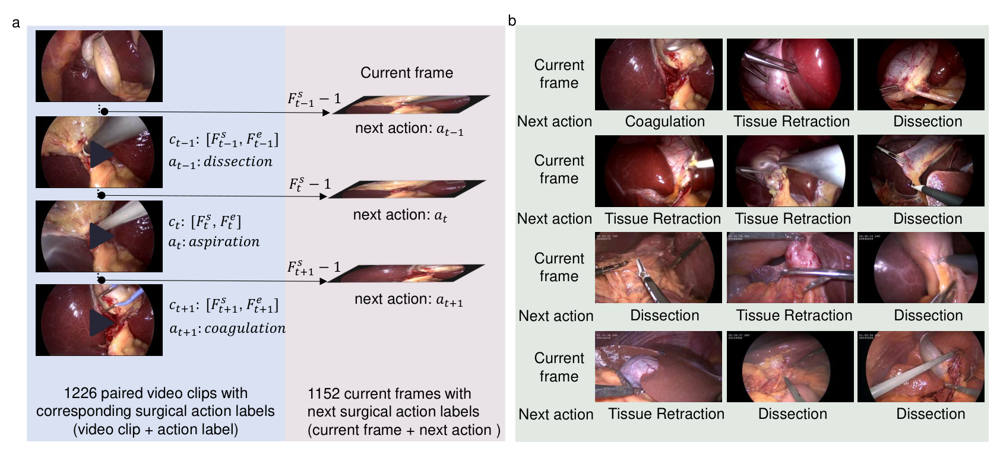
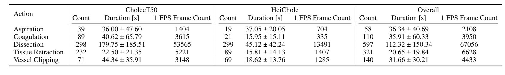
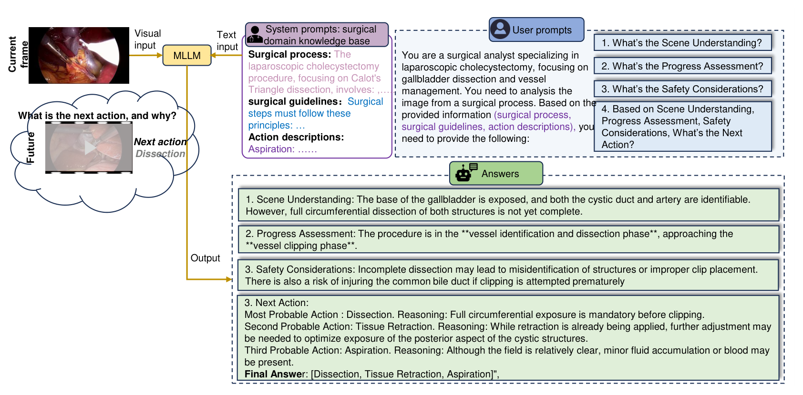
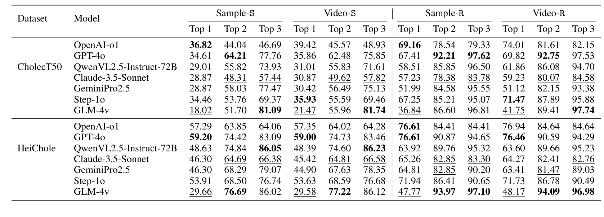
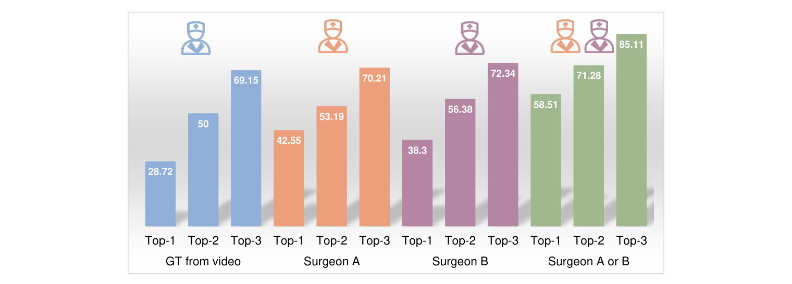
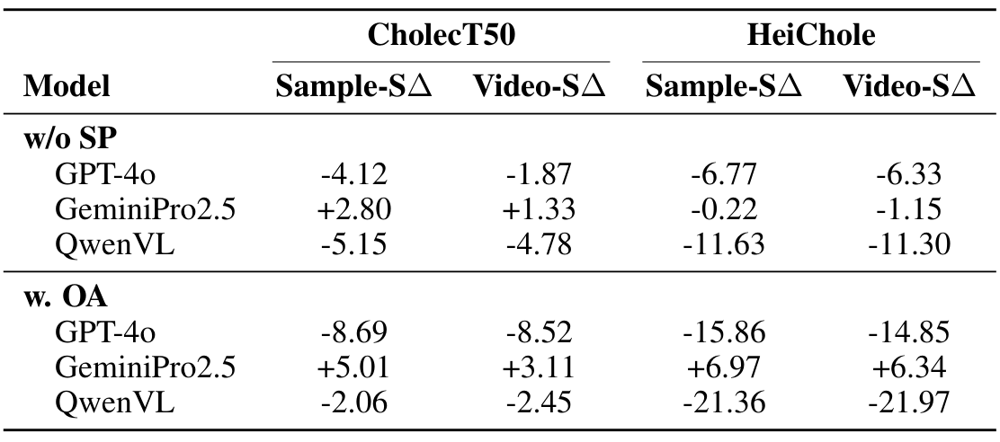
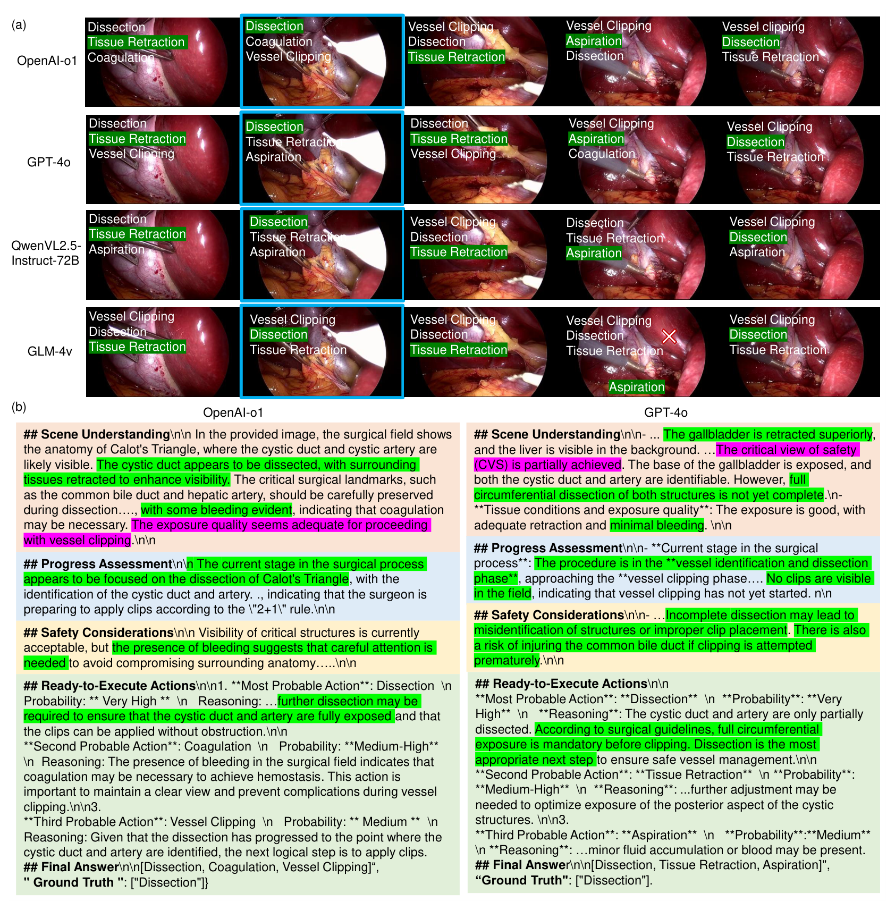

图文解读
1背景与动机
手术里最需要辅助的时刻是"接下来该做什么",而现有评测几乎只问"现在在做什么"。
通用多模态基准测识别、属性和空间关系;医学模型和数据集集中在影像判读与诊断问答;手术 AI 的数据集多做阶段识别、器械分割和器械与组织的交互检测。它们描述的都是已经发生的事。
作者想要的是前瞻判断:看到当前画面,说出下一步该做哪个动作。这既要看清器械和组织的细节,又要知道手术流程走到了哪一步。论文要回答的是,能否把已有的胆囊切除视频改造成这样的评测,并量化当前多模态大模型的水平。
2核心观点速览
- 样本怎么来: 在两个公开胆囊切除数据集的阶段 2 到 4 上标注五类动作片段,取每个片段起点前一帧作为当前帧,该片段的动作作为下一动作,共 1,152 个样本。
- 怎么问: 给模型一张当前帧和一段长提示(手术流程、操作规范、动作描述),让它先分析场景、进度和风险,再给出三个排序候选。
- 结果: 严格首选准确率最好只有 36.82 和 59.20;两种提示消融在不同模型上方向相反。
- 边界: 论文没有给先验基线。按已发布标签算,恒答"解剖"在两个子集上都高于所有模型。论文也已被作者撤稿。
3样本是怎样构造的
一个样本的质量取决于动作片段切得准不准,以及"当前帧"到底包含多少信息。

五类动作是吸引、电凝、解剖、夹闭和组织牵拉。标注时把连续同标签的帧合并成片段,只保留动作位于画面中央、且只含一个动作的片段,再人工复核。标注者人数、资质和一致性论文未说明,正文说"来自三个数据集"但只列出两个,1,226 个片段如何减到 1,152 个当前帧也未说明。
当前帧是下一片段起点的前一帧,画面里多半还是上一个动作的状态。所以一部分样本实际上是"认出当前动作,再按流程推一步"。
4类别分布决定了分数的下限

解剖占片段的 48.7%,吸引只有 58 个片段。论文没有给出下一动作标签的分布,我用 Hugging Face 上的已发布标签统计:解剖在 CholecT50 子集占 37.56%,在 HeiChole 子集占 61.52%。
HeiChole 的标签里还有 32 条拼写成 "Tissueretration",评分时是否合并论文未说明。类别越集中,恒答多数类的分数越高,这正是后面判断模型的标尺。
5模型怎样被提问和打分

系统提示是一个手术知识库:流程、规范、五类动作描述。用户提示要求依次回答场景理解、进度评估、安全考虑,再给出三个候选。公开提示里还多一段"补充询问",要求检查夹闭是否满足"2+1"规则,论文正文没有提到。
打分有四种口径:严格样本级、严格病例级、放宽样本级(下一个或再下一个动作都算对)、放宽病例级,每种再分前一到前三。五类里前三候选就覆盖三类,放宽再接受两个真值,分数上限被抬得很高。模型版本、解码参数、无效输出的计分方式,论文都未说明。
6结果说了什么

| 子集 | 恒答多数类 | 最好模型严格首选 |
|---|---|---|
| CholecT50 | 37.56 | 36.82(o1) |
| HeiChole | 61.52 | 59.20(GPT-4o) |
七个模型的严格首选准确率都没有超过恒答"解剖"。 这个先验在测试集上统计,偏乐观,但差距方向在两组都一致。
GLM-4v 首选最低(18.02)、前三最高(81.09),像是每次列出最常见的几类;o1 首选最高,前三却只有 46.69。放宽后分数普遍上升,但正文"超过 20 个点"在 HeiChole 子集上七个模型都不成立。
7医生参照与提示消融

换成医生偏好做真值,GPT-4o 首选从 28.72 升到 42.55 和 38.3,接受两人任一时升到 58.51。这支持"视频动作只是合理选择之一",但"两人任一"同时接受两个答案,本身就会涨分;医生之间的一致率论文未说明。正文说 64 个样本,图中所有百分比却都能写成整数除以 94。

去掉系统提示后 QwenVL 在 HeiChole 降 11.63,GeminiPro2.5 在 CholecT50 反而升 2.80;只问动作时 QwenVL 降 21.36,GeminiPro2.5 升 6.97。提示影响很大,但方向因模型而异。 正文所说 GPT-4o 降 8.85 在表中找不到。
8结果没说什么
- 没说明模型看懂了画面:没有先验、随机和纯文本对照,外部核查显示先验更高。
- 没说明模型能做多步规划:实验只有单帧输入和单个下一动作。
- 没说明领域知识普遍有用:三个模型里有一个方向相反,且只给差值。
- 没说明推理文本可靠:只展示了挑选出的例子,没有量化。

9复用前要检查什么
数据是公开的,但只含当前帧、统一提示和下一动作,不含动作片段与起止帧,数据卡没有许可证,原视频仍受 CholecT50 和 HeiChole 的条款约束。复用时先算多数类与纯文本基线,统一标签拼写,约束模型输出恰好三个合法类别,并按病例报告方差。